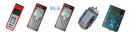

[3] MŰSZER ablak
Érintse meg a Műszer gombot a főablakban a Műszerablak megnyitásához.
Az ismert műszerek listája alul látható.

A TopoDroid egyszerre csak egy műszerrel működik.
Kiválasztásához érintse meg a bejegyzést a listán. A kiválasztott műszer neve fent látható, közvetlenül a gombok alatt.
Ha nincs kiválasztva műszer, piros üzenet jelenik meg, amely "A műszer nincs kiválasztva".
Támogatott műszerek
A TopoDroid csak az Android rendszerhez csatlakoztatott és párosított műszereket használja.
A műszereket a rendszer az Androiddal párosított műszerek listájából választja ki a Bluetooth-nevük alapján.
A következő műszerek támogatottak vagy támogatás alatt állnak:
| Műszer | Bluetooth-modell | Támogatás |
| DistoX v. 1 | DistoX | teljes |
| DistoX v. 2 | DistoX2 | teljes |
| DistoX BLE | DistoXBLE | teljes |
| BRIC 4 | BRIC4 | teljes |
| BRIC 5 | BRIC5 | nem tesztelt |
| SAP 5 | SAP5 | teljes |
| SAP 6 | SAP6 | részlegesen tesztelt |
| Cavway X1 | Cavway | teljes |
| DiscoX | DiscoX | tesztelés alatt [T] |
A TopoDroid nem ismeri fel azokat a műszereket, amelyek neve nem tartozik ezek közé.
Műszer tulajdonságai
Alapértelmezés szerint a TopoDroid a Bluetooth MAC-címet használja műszernévként.
A műszereknek beceneveket lehet adni, hogy több eszközt könnyebben meg lehessen különböztetni egymástól.
Bár a TopoDroid egyszerre csak egy műszerrel működik, lehetővé teszi egy második működő műszer beállítását is.
Ez a beállítás felgyorsítja a két műszer közötti váltást a felmérés során.
Végül lehetőség van egy műszer „elfelejtésére” is: ez gyakorlatilag eltávolítja az eszközt a TopoDroid adatbázisából
és az Androidhoz csatlakoztatott műszerek közül (ha össze volt kötve).
AKCIÓK
- megérintve a műszer bejegyzését, az az aktív műszer lesz
- a műszer bejegyzésének hosszú megérintésével megnyílik egy párbeszéd ablak amivel szerkesztheted a műszer tulajdonságokat
GOMBOK
- a Bluetooth-kapcsolatot visszaállítása.
- eszközinformációk [N,*]
- DistoX , BRIC4, vagy Cavway memória funkciók [*]
- be- és kikapcsolhatja a DistoX kalibrációs módot [*](csak a DistoX-nél)
- a kalibrációk listája.
- beolvassa és megjeleníti a DistoX/Cavway kalibrációs együtthatóit [H,*]
[*] Ezek a műveletek kommunikációt igényelnek a műszerrel.
A DistoX és a Cavway esetében az összes gomb aktív.
A BRIC esetében az első három gomb aktív.
A SAP és a DiscoX esetében csak az első gomb aktív.
Ha a DistoX kalibrációs mód átkapcsolása elsőre nem sikerül, ismételje meg másodszor.
Az eszközadatok beolvasása sikertelen, ha a TopoDroid csatlakozik és adatokat tölt le.
Ez akkor fordulhat elő, ha a műszer ablak megnyílik a mérés ablakból.
MENÜ
- Bezárja az ablakot.
- Keresés új BLE műszerek keresésére [N,*].
- Szétkapcsolás törli az aktív eszközt [H]
- Lementeni és feltölteni a firmware-eket a DistoX2-re [S, *]
- A Bluetooth adatcsomagok naplójának megjelenítése [T]
- Beállítások
- Súgó
Bluetooth-keresés
Ha egy BLE-eszköz nem jelenik meg a MAC-címével, akkor a „BT-keresés” menüvel kereshető meg.
BLE-eszközök hozzáadásához elegendő BT-keresést végezni bekapcsolt eszközzel.
Android-11-ig az eszköz nem található meg, hacsak a „Helyszín” aktív.
A keresés néhány másodpercig tart, és a megtalált eszközök megjelennek a listában.
A keresés során a „Bluetooth” gomb narancssárgára vált, és a megnyomásával befejeződik a keresés.
A klasszikus Bluetooth-eszközöket (DistoX v. 1 és 2) a rendszerbeállítások alkalmazás segítségével kell csatlakoztatni és párosítani az Androidhoz.
A DistoX PIN-kódja „0000”, négy nulla.
A SAP PIN-kódja „000000”, hat nulla.
ESZKÖZBEÁLLÍTÁSOK
- Bluetooth: az indítás engedélyezése, letiltása vagy ellenőrzése [alapértelmezett "ellenőrzés"]
- Új adatok száma: letöltés előtt olvassa ki az új adatok számát (igény szerinti mód) [alapértelmezett "nem"]
A következő beállítások csak a DistoX-ra vonatkoznak (amely a klasszikus bluetooth-ot használja).
- Csatlakozási mód: "igény szerint", "folyamatos" vagy "több" [alapértelmezett "igény szerint"]
- DistoX Socket típus: normál vagy "insecure" [az alapértelmezett "insecure"]
Csatlakozási módok
Három csatlakozási mód van a DistoX/Cavway számára.
- igény szerint módban az adatok sorozatban kerülnek letöltésre, és amikor nincs több adat letöltésére, a kapcsolat le van zárva.
- folyamatos módban a TopoDroid kapcsolatban marad a műszerrel, és a mérések azonnal letöltődnek.
Amikor a műszer és az Android kapcsolata megszakad, a TopoDroid ismételten megpróbálja újracsatlakozni.
Ellenkező esetben a bluetooth kapcsolat bezáródik.
- a több mód olyan, mint az „igény szerinti” mód, de hosszú érintés a „letöltés” gombra, a Mérés ablakban vagy a Vázlat ablakban,
megváltoztatja a műszert. Ha beállítottál egy "második" DistoX/Cavway-t (a Műszer ablakban), akkor felcseréli az aktuális ismert műszerrel.
Ellenkező esetben párbeszédpanelt kapsz, hogy kiválassz egyet a párosított műszerek közül.
A "több" módban az aktuális műszer a Mérés és a Vázlat ablakok címében jelenik meg.
A csatlakozási mód csak az adatok letöltésére vonatkozik. A műszer egyéb funkciói egylépéses lekérdezési módot használnak.
A SAP, BRIC, és DiscoX mindig folyamatos módban van összekapcsolva.
Másodlagos beállítások: Csatlakozási késleltetés, dupla-műszeres mérés, Adatszünet, Adatkész várakozás, Lézer szünet, Mérés szünet.
Műszerek
DistoX hibaelhárítás
DistoX funkciók
BRIC funkciók
SAP funkciók
Cavway funkciók
< Főablak |
Kalibrációs ablak >